ODOΤ · actual asset evidence
Vivid color.
Still overgrown.
Restore colorful material bodies, not the old bare geometry. Landed grey baseline versus current exported source colors under the unchanged neutral renderer. No post-render saturation or lighting trick. All 118 models and 15 native UI entries accounted for.
| Recovered | Retained | Not qualified |
|---|
| Blue/terracotta roofs, warm timber, faction cloth, living greens, cyan/violet bodies; restrained local painted variation. | Dense planted growth, distinct working signatures, second-round focal refinements, shared foliage, roots/rigs/clips and original seal. | Actual game consumption/camera, GPU budget, artist acceptance and animation appeal. |
Direction, judgments and checks · 133-ID inventory · Exact evidence hashes and resource counts · Original illustrative inspiration (not acceptance)
buildings/woodcutter_hut
Recover warm timber, distinct roof/cloth colors and amber craft accents; retain dense planted ivy/moss, working signatures and all second-round focal shapes/rest lanes.
 Before · neutral actual GLBAfter · neutral actual GLB
Before · neutral actual GLBAfter · neutral actual GLB96px canvas
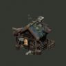
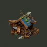
active_mesh_nodes: 982 → 982; active_triangle_instances: 44,821 → 44,821. Geometry retained, not a tested GPU budget.
buildings/bakery
Recover warm timber, distinct roof/cloth colors and amber craft accents; retain dense planted ivy/moss, working signatures and all second-round focal shapes/rest lanes.
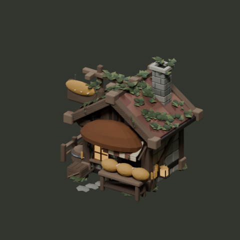
Before · neutral actual GLBAfter · neutral actual GLB96px canvas
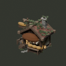
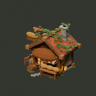
active_mesh_nodes: 934 → 934; active_triangle_instances: 46,003 → 46,003. Geometry retained, not a tested GPU budget.
buildings/weaver
Recover warm timber, distinct roof/cloth colors and amber craft accents; retain dense planted ivy/moss, working signatures and all second-round focal shapes/rest lanes.
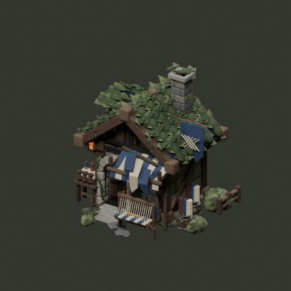
Before · neutral actual GLBAfter · neutral actual GLB96px canvas 
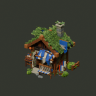
active_mesh_nodes: 2,674 → 2,674; active_triangle_instances: 106,650 → 106,650. Geometry retained, not a tested GPU budget.
buildings/magic_academy
Recover warm timber, distinct roof/cloth colors and amber craft accents; retain dense planted ivy/moss, working signatures and all second-round focal shapes/rest lanes.
 Before · neutral actual GLBAfter · neutral actual GLB
Before · neutral actual GLBAfter · neutral actual GLB96px canvas
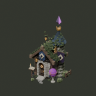
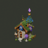
active_mesh_nodes: 7,418 → 7,418; active_triangle_instances: 248,974 → 248,974. Geometry retained, not a tested GPU budget.
characters/knight
Recover faction/role cloth, hair, warm skin and equipment hues; retain traveling layers, readable faces/grips, rig/sockets and all six clips. Low emission strengths retained.
 Before · neutral actual GLB
Before · neutral actual GLB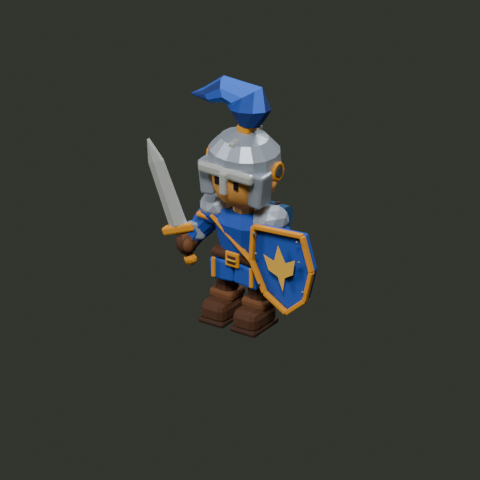
After · neutral actual GLB96px canvas
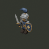
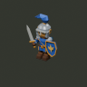
active_mesh_nodes: 87 → 87; active_triangle_instances: 7,798 → 7,798. Geometry retained, not a tested GPU budget.
characters/evil_mage_unit
Recover faction/role cloth, hair, warm skin and equipment hues; retain traveling layers, readable faces/grips, rig/sockets and all six clips. Low emission strengths retained.
 Before · neutral actual GLB
Before · neutral actual GLB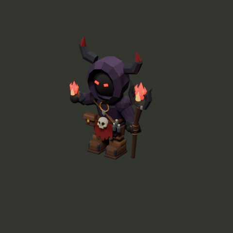
After · neutral actual GLB96px canvas
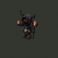
active_mesh_nodes: 89 → 89; active_triangle_instances: 7,625 → 7,625. Geometry retained, not a tested GPU budget.
environment/hex_glowing_mushrooms
Recover green/teal foliage, blue/violet shaded magic and warm wood/fauna accents with fine related variation; preserve planted overgrowth, facets, shared prototypes and tile composition.
 Before · neutral actual GLB
Before · neutral actual GLB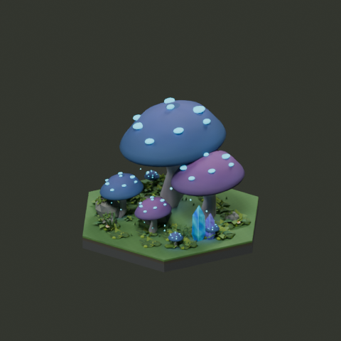
After · neutral actual GLB96px canvas
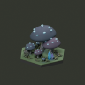
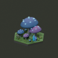
active_mesh_nodes: 1,847 → 1,847; active_triangle_instances: 37,564 → 37,564. Geometry retained, not a tested GPU budget.
environment/hex_crystal_grove
Recover green/teal foliage, blue/violet shaded magic and warm wood/fauna accents with fine related variation; preserve planted overgrowth, facets, shared prototypes and tile composition.
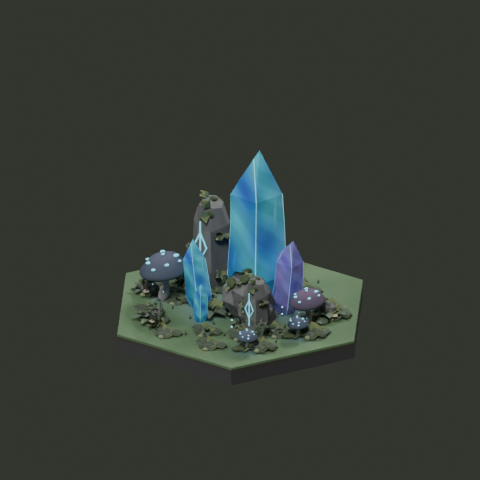
Before · neutral actual GLB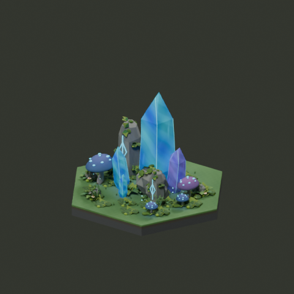
After · neutral actual GLB96px canvas
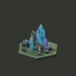
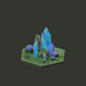
active_mesh_nodes: 2,135 → 2,135; active_triangle_instances: 38,848 → 38,848. Geometry retained, not a tested GPU budget.
environment/hex_ground_leaf_litter
Recover living ground/ochre litter or teal water colors and related fine washes; preserve flat occupation planes, footprint, alpha and connector endpoints.
Before · neutral actual GLB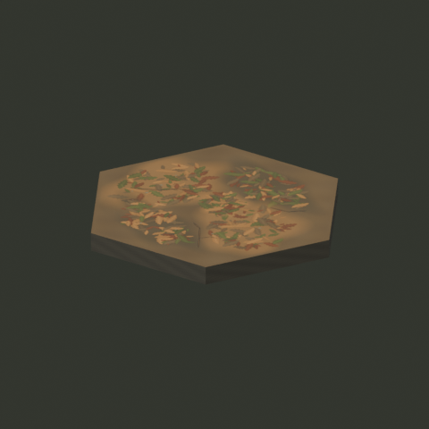
After · neutral actual GLB 96px canvas
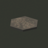
active_mesh_nodes: 3 → 3; active_triangle_instances: 22 → 22. Geometry retained, not a tested GPU budget.
environment/hex_river_overlay_turn_60
Recover living ground/ochre litter or teal water colors and related fine washes; preserve flat occupation planes, footprint, alpha and connector endpoints.
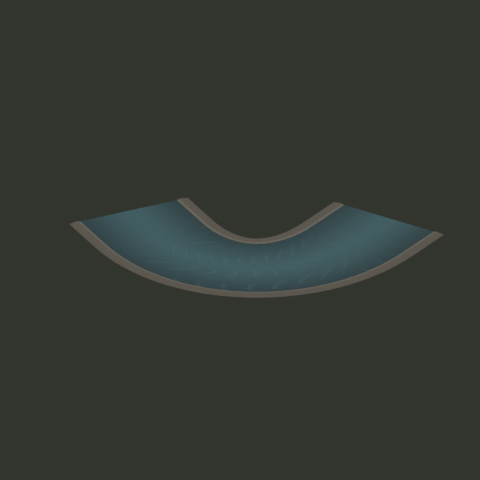
Before · neutral actual GLBAfter · neutral actual GLB96px canvas
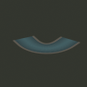
active_mesh_nodes: 1 → 1; active_triangle_instances: 408 → 408. Geometry retained, not a tested GPU budget.
environment/components/forest_lantern_snail
Recover green/teal foliage, blue/violet shaded magic and warm wood/fauna accents with fine related variation; preserve planted overgrowth, facets, shared prototypes and tile composition.
 Before · neutral actual GLB
Before · neutral actual GLB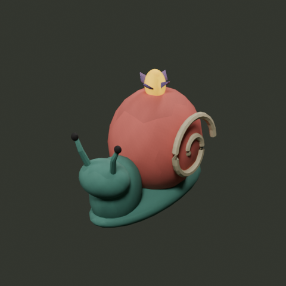
After · neutral actual GLB96px canvas
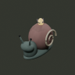
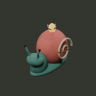
active_mesh_nodes: 15 → 15; active_triangle_instances: 3,138 → 3,138. Geometry retained, not a tested GPU budget.
props/staff
Recover material-specific warm wood/leather, role colors and metal accents; retain functional silhouette, fine grip/joint detail, hierarchy and shared mesh ownership.
 Before · neutral actual GLBAfter · neutral actual GLB
Before · neutral actual GLBAfter · neutral actual GLB96px canvas
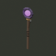
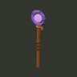
active_mesh_nodes: 17 → 17; active_triangle_instances: 1,518 → 1,518. Geometry retained, not a tested GPU budget.
ui/hud
Only affected ornamental palettes recovered. Native geometry, alpha, code/layout/state metrics, intent API and original seal unchanged; standalone mock data, not game evidence.
 Before · actual native Godot capture
Before · actual native Godot capture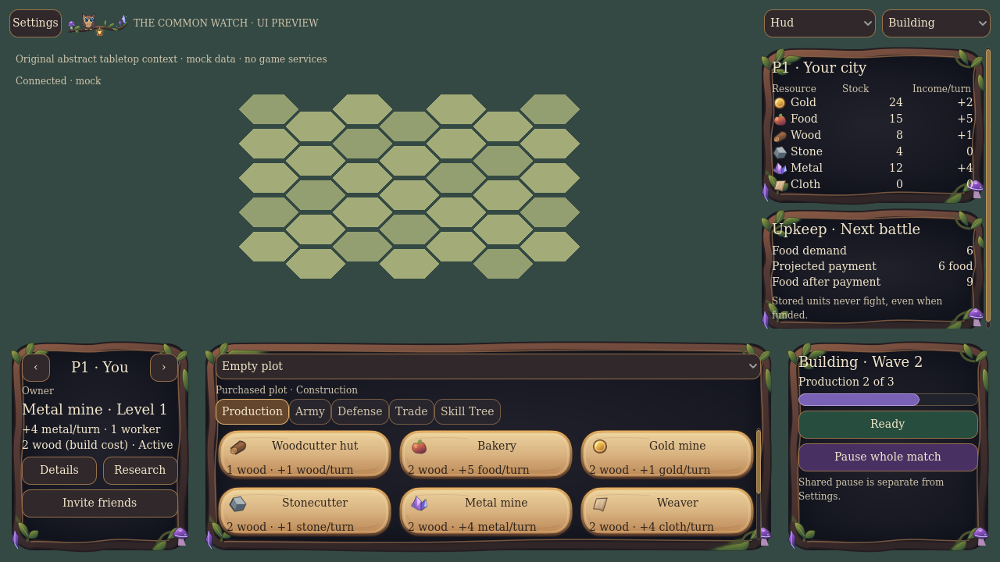
After · actual native Godot captureui/worldtree
Only affected ornamental palettes recovered. Native geometry, alpha, code/layout/state metrics, intent API and original seal unchanged; standalone mock data, not game evidence.
 Before · actual native Godot capture
Before · actual native Godot capture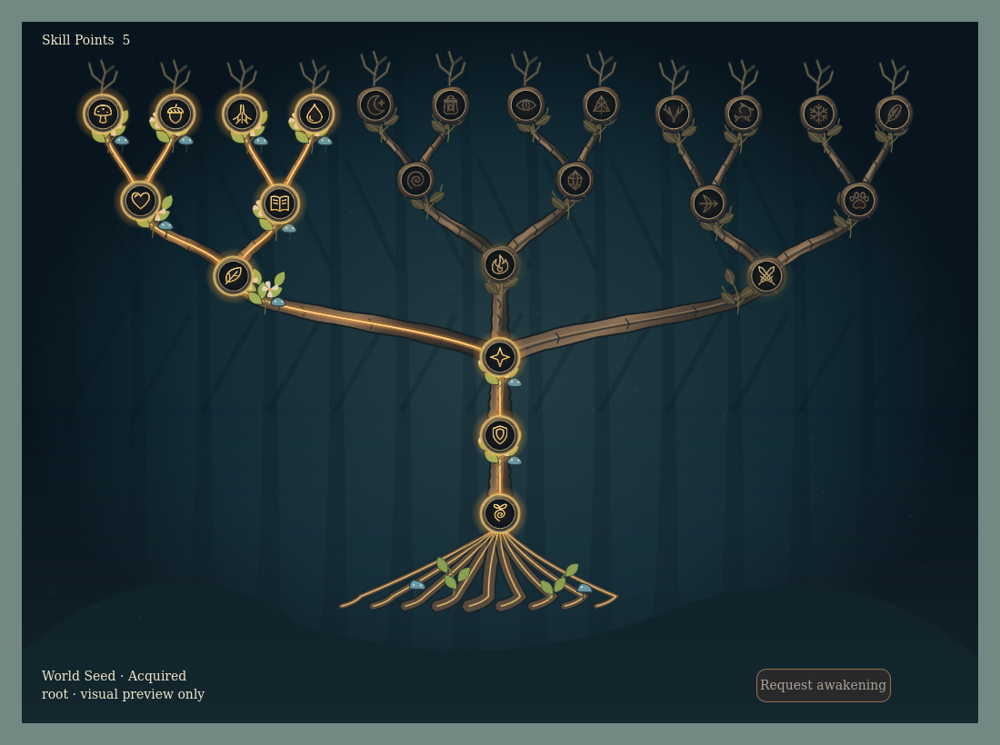
After · actual native Godot captureFull-catalog actual contact sheets
buildings-1
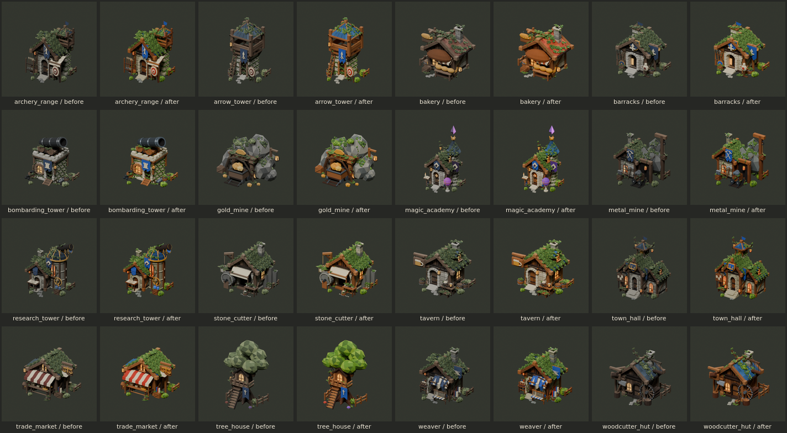
characters-1
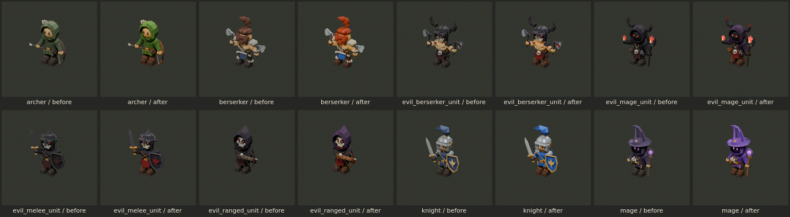
environment-1
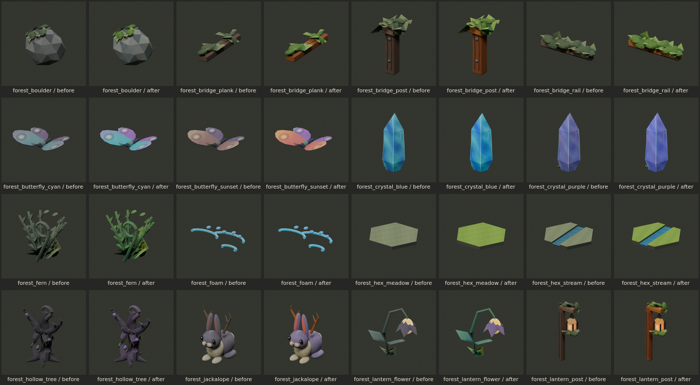
environment-2
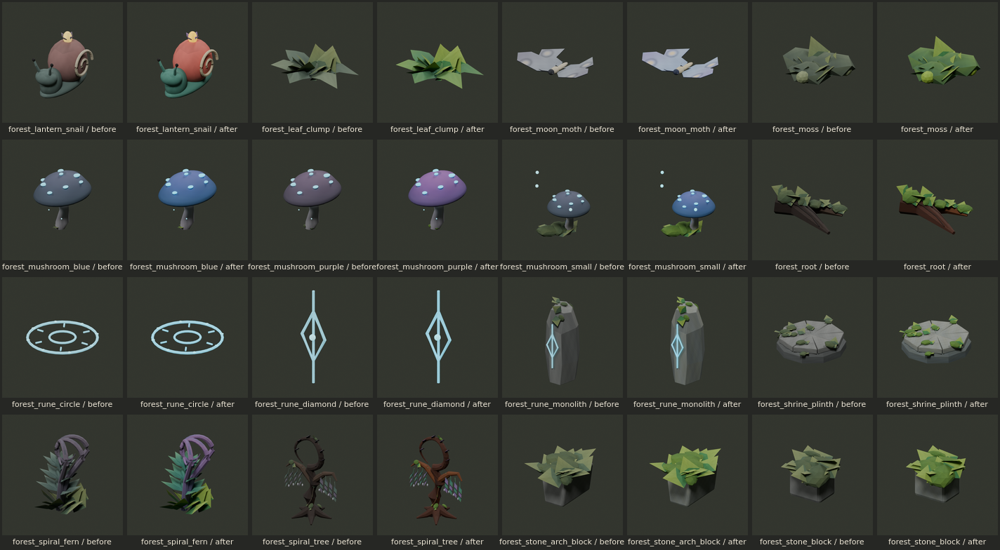
environment-3
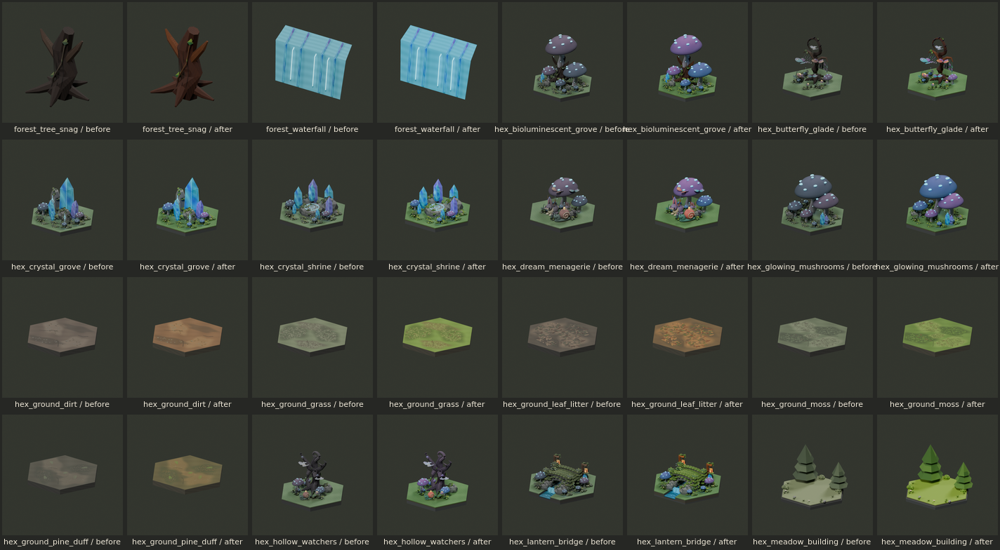
environment-4
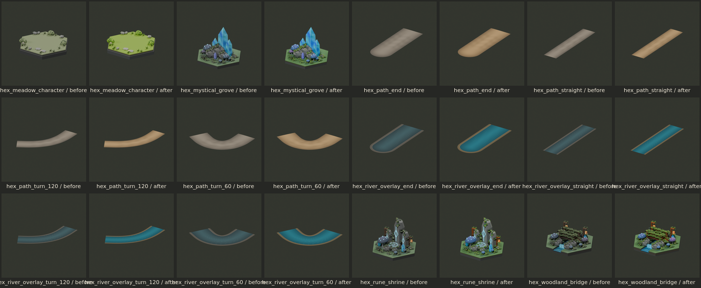
props-1
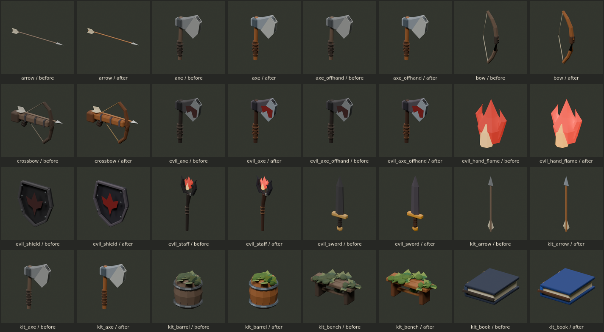
props-2
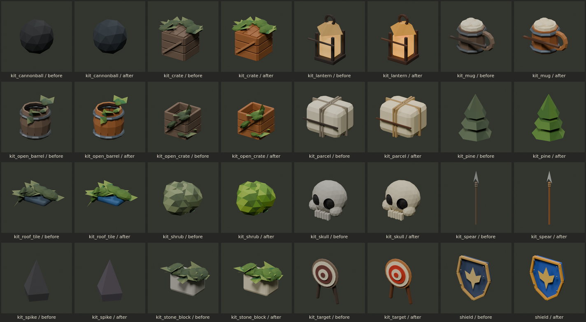
props-3
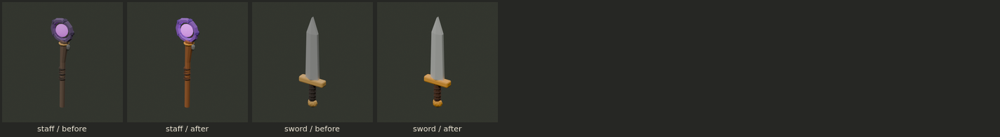
ui-1
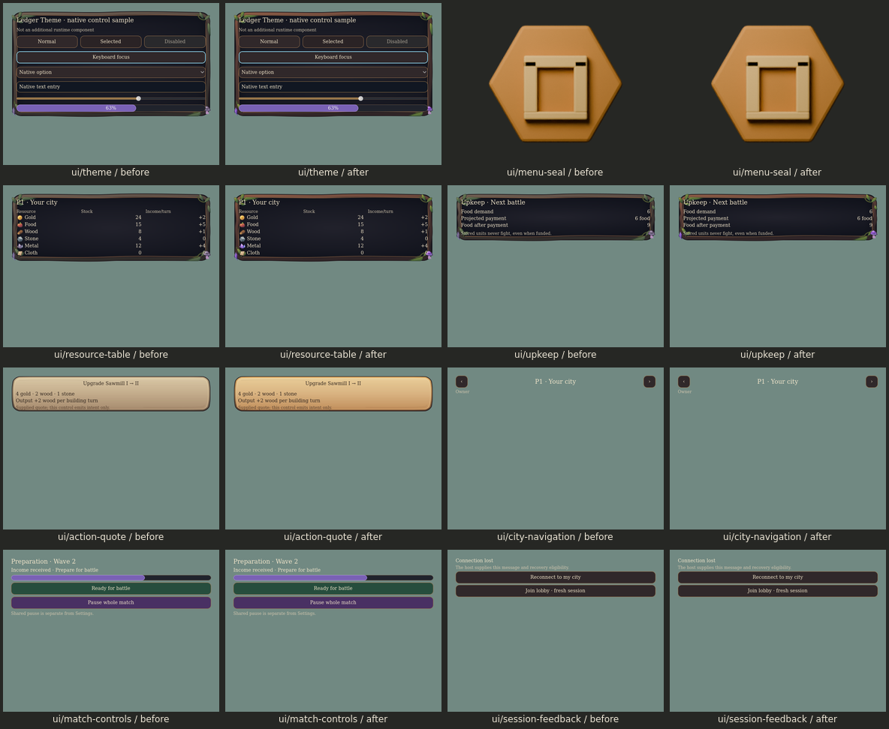
ui-2
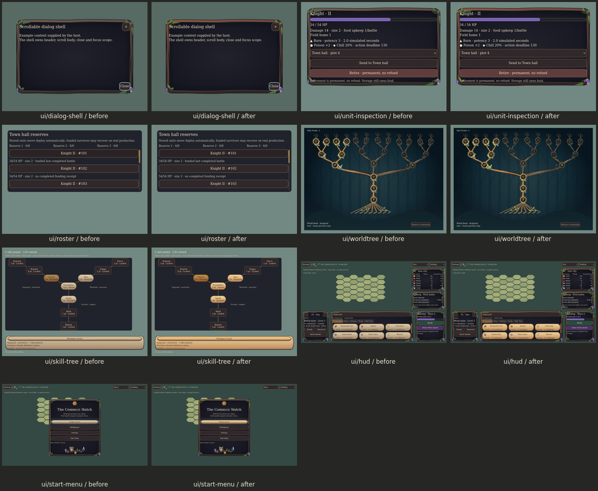